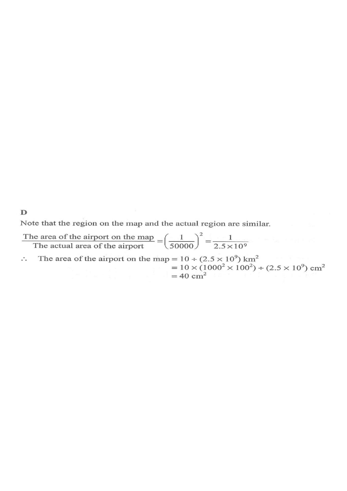

The scale of a map is $1:50000$. If the actual area of an airport is $10\ \text{km}^2$, then the area of this airport on the map is
A. $2\ \text{cm}^2$ B. $4\ \text{cm}^2$
C. $20\ \text{cm}^2$ D. $40\ \text{cm}^2$

Figure (original exam diagram)
1Interpret the scale.
Scale of a Map\(\dfrac{\text{length on map}}{\text{actual length}}=1:50000\)The scale compares lengths, so it must be applied to a length ratio first.
A scale of $1:50000$ means
\[ \frac{\text{length on map}}{\text{actual length}} = \frac{1}{50000}. \]
Hint: the scale compares lengths, not areas.
2Square it to get the area ratio.
Ratio of Areas of Similar Figures\(\dfrac{A_{1}}{A_{2}}=\left(\dfrac{\ell_{1}}{\ell_{2}}\right)^{2}\)Areas scale as the square of the scale, i.e. \(1:50000^{2}\).
The map region and the actual region are similar figures, so areas scale as the square of the length ratio:
\[ \frac{\text{area on map}}{\text{actual area}} = \left(\frac{1}{50000}\right)^2 = \frac{1}{50000^2} = \frac{1}{2.5\times 10^{9}}. \]
Hint: for similar figures, \(\dfrac{A_1}{A_2}=\left(\dfrac{\ell_1}{\ell_2}\right)^2\).
3Convert the actual area to \(\text{cm}^2\).
Unit Conversion for Area\(1\ \text{km}^{2}=(10^{5}\ \text{cm})^{2}=10^{10}\ \text{cm}^{2}\)The actual area must be in \(\text{cm}^{2}\) to match the map area.
Hint: divide the actual area (in $\text{cm}^2$) by $2.5\times 10^{9}$.
Answer: D $40\ \text{cm}^2$
PRACTICESimilar question — try it yourself
Question. The scale of a map is \(1:25000\). A lake on the map has an area representing an actual area of \(6\ \text{km}^{2}\). Find the area of the lake on the map in \(\text{cm}^{2}\).
Show the worked solution
Step 1. Areas scale as the square of the length ratio: \(\dfrac{\text{map area}}{\text{actual area}}=\dfrac{1}{25000^{2}}\).
Step 2. Convert the actual area: \(6\ \text{km}^{2}=6\times10^{10}\ \text{cm}^{2}\).
Step 3. Map area \(=\dfrac{6\times10^{10}}{6.25\times10^{8}}\ \text{cm}^{2}=96\ \text{cm}^{2}\).